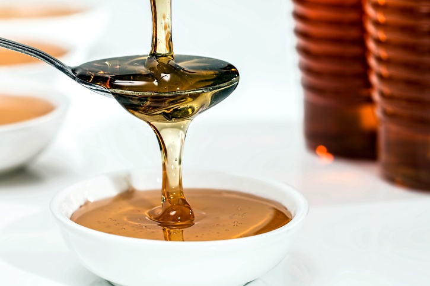

Baklava Syrup

Photo by Stevepb (CC0 1.0)
Description
Golden, glossy, & fragrant - this syrup is the soul of perfect baklava.
Infused with honey, citrus, & a whisper of spice, it seeps into every flaky layer, adding sweetness, shine, & that unmistakable Mediterranean magic. Poured warm over freshly baked pastry, it transforms baklava into a symphony of flavour & texture.
Ingredients
- 1 1/2 cups caster sugar
- Zest of 1 large lemon, in wide strips
- 1/4 cup lemon juice
- 1/3 cup honey
- 7 cloves
- 1 star anise pod
- 1 cinnamon stick
- 3/4 cup water
Method
- Combine ingredients with in a saucepan
- Bring to boil over high heat, stirring until sugar fully dissolves
- Reduce heat to medium & simmer for 3 minutes
- Set aside to cool
Home